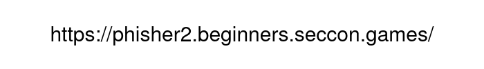

phisher2
WebページのURLと、サーバのファイル一式が与えられた。
与えられたファイル中の phisher2/phisher2/admin.py および phisher2/phisher2/app.py は、以下の動作をするものだった。
- JSONでテキストを受け取る。
- 受け取ったテキストを
p タグで囲み、HTMLファイルを作成する。
- 作成したHTMLファイルをレンダリングし、スクリーンショットを撮る。
- 撮ったスクリーンショットに対しOCRを行う。
- OCRの結果から許可されるURLが得られた場合、受け取ったテキストから得られるURLにflagのパラメータを足してアクセスする。
アクセスさせたいURLをテキストで書いた後、その上にOCRに読ませるURLを画像で配置するとよい。
具体的には、RequestBin.com のURLの後に以下のテキストを繋げたものを送信した。
An URL of a web page and files for the server were given.
What the files phisher2/phisher2/admin.py and phisher2/phisher2/app.py in the given files do is:
- Receive a text in JSON format.
- Create a HTML file by surrounding the received text with a
p tag.
- Render the HTML file and take a screenshot.
- Perform OCR on the screenshot.
- If an allowed URL is found from the result of OCR, access a URL found from the received text with a parameter containing the flag added.
We should firstly put an URL to have it to access as text, and then place an URL to have the OCR to read as an image over the text.
Specifically, I sent an RequestBin.com URL with this text added after the URL.
#<img style='position: absolute; left: 0; top: 0;' src='https://placehold.jp/30/ffffff/000000/700x100.png?text=https%3A%2F%2Fphisher2.beginners.seccon.games%2F'>
これにより、アクセスさせるURLが以下の画像で隠される。
This will have the URL to be accessed be hidden behind this image.

以下の手順でテキストの送信を行うと、RequestBin.com にflagが送られてきた。
- 指定のページを Firefox で開く。
- 開発者ツールのネットワークタブを開き、リロードする。
/ へのリクエストを右クリックし、「編集して再送信」を選択する。- メソッドを
POST にする。
- 名前
Content-Type、値 application/json のヘッダーを追加する。
- ボディを、送信するテキストを
{"text":" と "} で囲んだものにする。
- 編集したリクエストを送信する。
I sent the text in this way. As a result, the flag was sent to RequestBin.com.
- Open the specified page with Firefox.
- Open the Network tab on the Developer Tools, and reload the page.
- Right-click the request to
/ and select "edit and resend".
- Set the method to
POST.
- Add a header with a name
Content-Type and a value application/json.
- Set the body to the text to send surrounded by
{"text":" and "}.
- Send the modified request.
ctf4b{w451t4c4t154w?}
SECCON Beginners CTF 2023